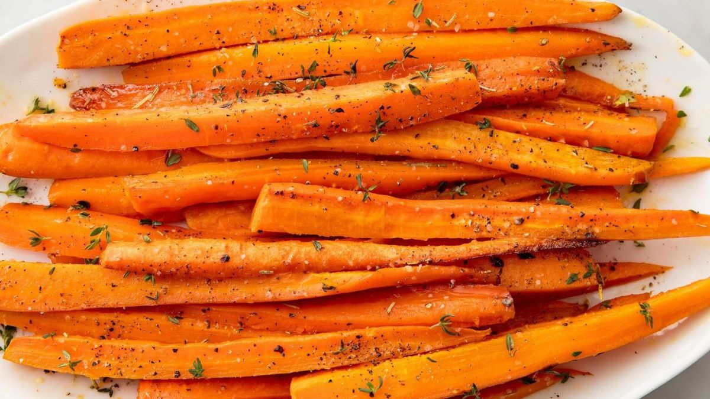

Glazed Carrots
This is a simple recipe to enhance the flavors of the raw carrots you have sitting in your fridge.
Follow this simple recipe to cook carrots to perfection with a sweet glaze on top.
Ingredients
- 2 pounds carrots, peeled and cut into sticks
- 1/4 cup butter
- 1/4 cup packed brown sugar
- 1/4 tsp salt
- 1/8 tsp ground white pepper
Directions
- Place carrots into a large saucepan; pour in enough water to reach depth of 1 inch and bring to a boil.
Reduce heat to low, cover, and simmer carrots until tender, 8 to 10 minutes. Drain and transfer to a bowl.
- Melt butter in the same saucepan over low heat. Stir in brown sugar, salt,
and white pepper until dissolved. Add carrots to the saucepan and toss until
coated in the brown sugar mixture. Cook and stir until carrots are heated through and fully coated with glaze, 1 to 3 more minutes.